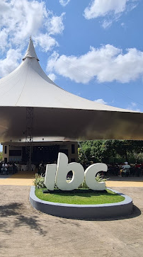

Pista de Orientação - IBC
-
O que é uma Pista de Orientação?
-
Pista de Orientação é o local preparado para se praticar o esporte Orientação, uma corrida que
utiliza mapa e bússola.
-
Na Pista de Orientação, pontos de controle são montados no terreno e representados em um mapa.
-
O objetivo é visitar um conjunto desses pontos em sequência definida no mapa. Esta sequência de
pontos é chamada de percurso.
-
O percurso inicia no ponto de partida, sinalizado por um triângulo no mapa, e finaliza no ponto
de chegada, sinalizado com um círculo duplo.
-
Em uma Pista de Orientação podem existir percursos diferentes, cada um com sua distância total e
seu nível de dificuldade. Em um mapa é impresso um único percurso.
-
Como eu posso utilizar esta Pista de
Orientação?
-
Você pode obter um mapa na Igreja Batista Central, imprimir um ou visualizá-lo em seu celular.
-
Se você está no campus da IBC, informe-se onde adquirir seu mapa.
-
Se tiver acesso a uma impressora, basta baixar o mapa e imprimir.
-
A opção de baixar o mapa e usá-lo em seu celular
é possível, mas você
perde a experiência em relação a noção de distância e o alinhamento do mapa em relação ao
terreno, que são técnicas
importantes para a Orientação.
-
Para iniciar o percurso, dirija-se ao ponto de partida, que corresponde ao ponto localizado ao
lado do balanço,
próximo ao refeitório.
-
A partir daí, você deve encontrar os pontos do percurso na ordem indicada no mapa até o último
ponto, marcado no
mapa com um círculo duplo.
-
Eu consigo registrar a passagem pelos pontos de
controle? E consigo registrar meu
tempo no percurso?
-
Nas placa de identificação desta pista há dois QR codes na parte superior. Cada um armazena o
número ou nome do ponto de controle.
-
Se você ler estes códigos com um aplicativo de QR code, poderá acessar o histórico e verificar
se realizou a sequência correta do percurso.
-
Se você quer registrar seu tempo no percurso, há um aplicativo em desenvolvimento. Um tutorial
está sendo produzido e será disponibilizado aqui em breve.
-
Há um limite de idade para praticar Orientação?
-
A Orientação é um esporte para todas as idades. As crianças pequenas podem participar acompanhadas.
Por volta de 10 anos a criança já pode ser capaz de realizar pequenos percursos sozinha. E contamos
também com atletas com mais de 80 anos, que recebem percursos com menor exigência física.
-
Os atletas são distribuídos em categorias de acordo com seu gênero, idade e experiência. Os percursos
são traçados nos níveis Novato, Bravo, Alfa e Elite.
-
A Elite é a categoria de competição mais alta, com foco em competições nacionais e internacionais,
bastante exigentes em relação às capacidades físicas e técnicas.
-
As outras categorias envolvem atletas em desenvolvimento, amantes da natureza, atletas amadores em
busca de preparo físico e também aqueles que curtem competições saudáveis entre amigos.
-
É comum ver pais e filho, avôs e netos participando de uma mesma competição, cada um disputando em
sua categoria. Daí nasceu o jargão que a Orientação é o esporte da família.
-
Pode me informar mais sobre o esporte
Orientação?
-
A Orientação é um esporte da natureza. É uma corrida individual em terrenos diversos, como campos, bosques e áreas
urbanas, onde o atleta compete com outros de mesma experiência e faixa etária utilizando um mapa e uma bússola.
-
Sua origem é sueca, onde surgiu por volta de 1918. Chegou ao Brasil por volta de 1971 por meio de organizações
militares.
-
O esporte é regulamentado pela Federação Internacional de Orientação
(IOF)
e é reconhecido pelo Comitê Olímpico Internacional (COI).
-
A Confederação Brasileira de Orientação
(CBO)
conta com mais de 100 clubes em 15 federações. A Federação Cearense de Orientação
(FECORI)
conta com 6 clubes e mais de 800 filiados.
-
Na competição, há um horário definido para a partida do atleta, que só poderá ver o mapa após autorizado. O tempo de
competição começa neste instante.
-
Na partida, o atleta é direcionado para o prisma identificado com um triângulo. A localização dele corresponde ao
ponto marcado com um triângulo no mapa. É como se o mapa dissesse: você está aqui.
-
A partir do prisma do triângulo, o atleta tem que ler o mapa, identificar os elementos naturais e construídos, e
definir a estratégia para chegar próximo ponto.
-
O atleta deve visitar os pontos na ordem apresentada e conferir se o número do controle junto ao prisma corresponde
ao número apresentado no mapa.
-
Após o último ponto numerado há o ponto da chegada. O tempo de competição finaliza aqui.
-
Para definir o vencedor, os tempos de competição são comparado entre os atletas de mesma categoria, que realizaram o
mesmo percurso.
-
Nas competições oficiais há um equipamento individual que registra o tempo e a ordem de passagem do atleta nos
pontos de controle.
-
Que clubes atuam na formação de atletas para a Orientação cearense?
-
Qual é o custo para praticar Orientação?
-
A Federação Cearense de Orientação
(FECORI)
regulamenta as competições no Estado, seguindo as regras da Confederação Brasileira de Orientação
(CBO).
-
Os Regulamentos das Competições, o Regimento de Taxas e o Calendário de Eventos podem ser acessados pelo site
www.fecori.org.br.
-
Em 2023, uma inscrição em uma prova oficial custa R$ 90,00 para o atleta filiado à CBO. Esta filiação custa R$ 50,00
uma única vez.
-
Na primeira, e até três participações, ainda acompanhado por um atleta experiente, o atleta pré-filiado à CBO paga
R$ 30,00. Esta pré-filiação custa R$ 15,00.
-
Em 2023 teremos 3 competições oficiais em percurso de média/longa distância, e uma competição com 3 percursos
rápidos em um fim de semana.
-
Os clubes procuram também oferecer oportunidades de cursos de iniciação e percursos treinos ao longo do ano.